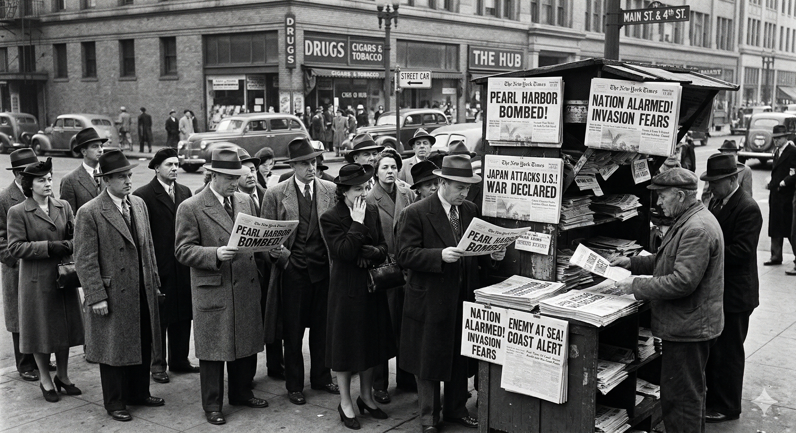
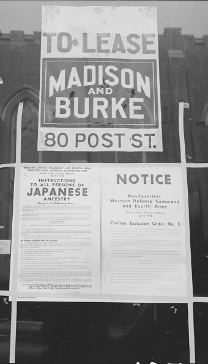
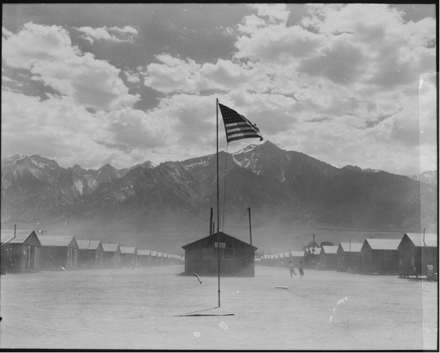
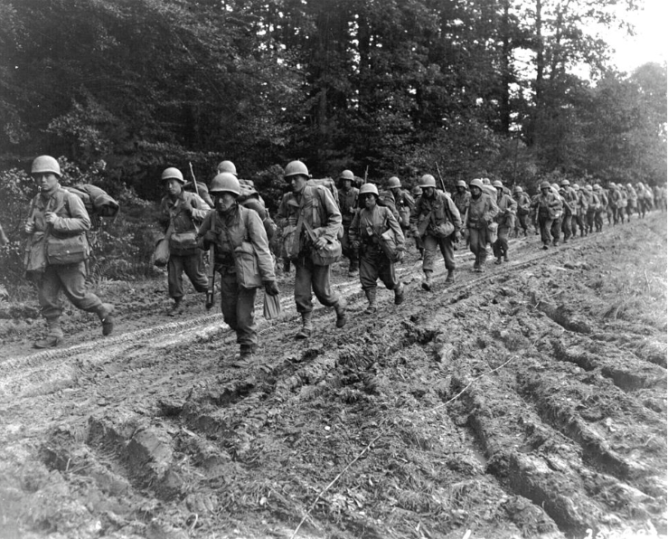

Core Objectives
- Analyze the factors—racism, war hysteria, and failure of leadership—that led to Executive Order 9066 and the forced removal of Japanese Americans.
- Evaluate the Supreme Court's reasoning in Korematsu v. United States versus Justice Robert Jackson's dissent regarding "military necessity."
- Trace the experiences of the Nisei in the internment camps and the military service of the 442nd Regimental Combat Team.
Key Terms
Executive Order 9066 | Internment Camps | Korematsu v. United States | Nisei | Issei | Manzanar | 442nd Regimental Combat Team | Fred Korematsu | Justice Robert Jackson | War Relocation Authority | Fifth Column | Civil Liberties Act of 1988 | Zoot Suit Riots
Introduction: From Pearl Harbor to Paranoia
In the traumatic aftermath of the attack on Pearl Harbor, the United States was consumed by a domestic panic that threatened the very foundations of its constitutional order. While the military scrambled to defend the Pacific, a war of perception and prejudice erupted on the home front. This climate of fear led to the systemic targeting and mass displacement of Japanese Americans, prioritizing perceived national security over fundamental civil liberties. Chapter 16, Section 3 explores how racial animosity and a failure of leadership resulted in one of the most profound constitutional crises in American history, leaving a lasting impact on the nation's legal landscape.

The Descent into Hysteria
Following the shock of December 7, deeply rooted racial prejudices and unfounded rumors of a treacherous hidden group transformed into a national security crisis. Fueled by panic and a failure of federal leadership, the government authorized the forced removal of approximately 120,000 Japanese Americans, stripping them of their homes, businesses, and civil liberties. These individuals, spanning both the immigrant and American-born generations, were sent to desolate internment camps where they endured grueling physical conditions and the profound psychological trauma of being imprisoned by their own country.
The Architecture of Suspicion
In the traumatic months following the attack on Pearl Harbor, the United States was gripped by a level of domestic panic that threatened the very foundations of its constitutional order. While the military scrambled to defend the Pacific, a different kind of war was being waged on the home front—a war of perception and prejudice. This climate of fear was particularly acute on the West Coast, where a large and vibrant Japanese American community had lived for decades. However, this community was already operating within a landscape of systemic exclusion. Long before 1941, nativist groups, labor unions, and politicians had pushed for laws like the Gentlemen's Agreement and the Immigration Act of 1924, which barred Japanese immigrants from attaining citizenship and restricted their ability to own land.
The shock of December 7 transformed these existing prejudices into a full-scale national security crisis. Rumors, often fueled by irresponsible journalism and local politicians, began to spread that Japanese Americans were operating as a Fifth Column. This term referred to a hidden group of traitors who were supposedly preparing to commit acts of sabotage—such as cutting power lines or signaling Japanese planes—to facilitate a direct invasion of the California coast. Despite the fact that the FBI and the Office of Naval Intelligence had conducted extensive surveillance and found zero evidence of such a conspiracy, the public clamor for removal became irresistible. General John L. DeWitt, the commander of the Western Defense Command, embodied this hysteria, famously declaring that "a Jap is a Jap," and arguing that the lack of sabotage was merely a sign that a coordinated attack was being timed for a later date.

This failure of leadership extended to the highest levels of the federal government. While Attorney General Francis Biddle and some members of the Justice Department argued that mass incarceration without trial was a blatant violation of the Bill of Rights, they were eventually overruled by military and political advisors. President Franklin D. Roosevelt, prioritize national security and political unity over the rights of a minority group, signed Executive Order 9066 on February 19, 1942. This order authorized the military to designate "exclusion zones" and remove any persons deemed a threat. In practice, it targeted only persons of Japanese ancestry, revealing that the "military necessity" was, in reality, a product of deep-seated racial animosity.
The forced removal was a logistical and humanitarian catastrophe. Approximately 120,000 people were ordered to report to assembly centers with only a few days' notice. They were told they could only bring what they could carry, forcing them to sell their homes, equipment, and businesses for pennies on the dollar. For the Issei (first-generation immigrants), this meant the total destruction of their life's work. For the Nisei (second-generation, American-born citizens), it was a shocking betrayal of their birthright. This mass displacement was not based on individual suspicion or criminal charges, but on the "crime" of ancestry, marking a dark chapter in the history of American civil liberties.
Checkpoint
1. What was the primary justification given by General John L. DeWitt and others for the removal of Japanese Americans despite a lack of evidence of sabotage?
Life in the Relocation Centers
The 120,000 Japanese Americans removed from the West Coast were eventually settled into ten permanent Internment Camps (officially called "relocation centers") located in desolate, windsate regions across the American interior. Managed by the War Relocation Authority, these camps were essentially prison cities. Locations like Manzanar in the California desert, Poston in Arizona, and Topaz in Utah were chosen for their isolation. The camps were surrounded by barbed-wire fences and patrolled by armed guards in watchtowers. For the families living inside, the reality of their incarceration was inescapable; the guns in the towers were pointed inward, at the very people the government claimed it was "protecting."

The physical conditions in the camps were grueling. Families were housed in cramped, tar-paper barracks that offered almost no privacy and very little protection from the elements. In the desert camps, the summers brought suffocating heat and blinding dust storms that coated everything in grit, while the winters brought freezing temperatures that seeped through the thin walls. Each barrack room was equipped with only a single lightbulb and a wood-burning stove for heat. Communal latrines and mess halls further stripped the internees of their dignity and disrupted the traditional family structure. In many cases, children began eating with their friends in the mess halls rather than with their parents, leading to a breakdown in parental authority and traditional Japanese social customs.
Despite these hardships, the internees demonstrated remarkable resilience. They worked together to build schools, hospitals, and libraries within the barbed wire. They organized baseball leagues, social clubs, and agricultural projects to make the camps self-sufficient. In many camps, internees created beautiful rock gardens and irrigation systems, attempting to bring life to the barren landscape. However, the psychological weight of the internment was heavy. The government’s attempt to assess the "loyalty" of the internees through a mandatory questionnaire in 1943 created deep social fractures. Questions 27 and 28—which asked if individuals were willing to serve in the U.S. military and if they would swear unqualified allegiance to the U.S. while forswearing allegiance to the Japanese Emperor—were particularly controversial. For many, a "yes-yes" answer was seen as a betrayal of their heritage, while for others, it was the only way to protect their future in America.
The "loyalty test" divided the camps into bitter factions. Those who answered "no" to the questions, often out of protest for the violation of their rights, were labeled "No-No Boys" and were often sent to the maximum-security Tule Lake camp. This period of incarceration lasted for three years, during which time a generation of Japanese Americans lost their homes, their education, and their sense of belonging in the only country they had ever known. The internment did not just steal their property; it attempted to steal their identity as Americans.
Checkpoint
1. How did the communal living conditions, particularly the mess halls, impact traditional Japanese family life in the camps?
Patriotism and the Legal Battle for Justice
Even while their families were imprisoned behind barbed wire, thousands of Japanese American men demonstrated extraordinary patriotism by volunteering for military service, proving their loyalty on the battlefields of Europe and in the intelligence operations of the Pacific. Concurrently, the mass incarceration sparked a major legal showdown, challenging the Supreme Court to determine if military necessity could justify the suspension of constitutional rights based solely on ancestry. Ultimately, this tension between national security and civil liberties left a complex legacy, leading to decades of legal battles before the government formally apologized for its failure to uphold the rights of its citizens.
Fighting for a Country That Denied Them Freedom
In a profound act of irony and courage, thousands of Nisei men fought to join the very military that was guarding their families behind barbed wire. Initially, the U.S. government had classified Japanese Americans as "4-C" (enemy aliens), making them ineligible for the draft. However, by 1943, as the need for manpower grew and the government sought to demonstrate the "success" of its assimilation policies, it allowed for the creation of an all-Nisei combat unit. This decision led to the formation of the 442nd Regimental Combat Team. For many Nisei, volunteering for this unit was a strategic choice; they believed that by shedding blood for the United States, they could prove their loyalty once and for all and secure a better future for their families.

The 442nd, which later merged with the 100th Infantry Battalion from Hawaii, adopted the motto "Go for Broke." They were sent to the European theater, where they fought in some of the most grueling and bloody campaigns of the war. They liberated towns in Italy and participated in the invasion of Southern France. The unit became legendary for its tenacity and bravery, frequently taking on the most dangerous assignments. One of their most famous actions was the rescue of the "Lost Battalion," a group of Texas soldiers who had been surrounded by German forces in the Vosges Mountains. The Nisei soldiers suffered nearly 800 casualties to save 211 of their fellow Americans, a sacrifice that demonstrated a level of patriotism that few could equal.
By the end of the war, the 442nd Regimental Combat Team had become the most decorated unit in the history of the United States military for its size and length of service. Its members earned more than 18,000 individual decorations, including over 9,000 Purple Hearts and 21 Medals of Honor. While their families remained in the Internment Camps, these men proved on the battlefields of Europe that citizenship was defined by action, not by race. Their valor was a powerful rebuke to the "Fifth Column" hysteria that had led to their incarceration. When they returned home, they were greeted as heroes by President Truman, who told them, "You fought not only the enemy, but you fought prejudice—and you have won."
The service of the Nisei was not limited to the front lines of Europe. Thousands also served in the Military Intelligence Service (MIS) in the Pacific. These soldiers used their knowledge of the Japanese language and culture to translate captured documents, interrogate prisoners, and intercept enemy communications. Their work was often conducted in secret and was essential to the Allied "island-hopping" strategy. Major General Charles Willoughby, General MacArthur's intelligence chief, later estimated that the work of the Nisei in the MIS shortened the war in the Pacific by as much as two years and saved countless American lives. Despite their vital contributions, these soldiers often faced the threat of being misidentified as the enemy by their own fellow troops, adding another layer of danger to their service.
Checkpoint
1. Why is the 442nd Regimental Combat Team considered a "legendary" unit in U.S. military history?
The Supreme Court and the Shadow of War
The internment of 120,000 people based on their race eventually led to a major constitutional showdown. The case that defined this struggle was Korematsu v. United States (1944). It centered on Fred Korematsu, a 23-year-old Nisei who had refused to report to the assembly centers. Korematsu was a loyal American citizen who had tried to enlist in the Navy but was rejected for health reasons. When the evacuation orders were issued, he underwent minor plastic surgery and changed his name, hoping to stay with his girlfriend and continue his life in California. He was eventually arrested, and with the help of the ACLU, he challenged the constitutionality of Executive Order 9066.

The case presented the Supreme Court with a fundamental question: Can the government suspend the rights of a specific racial group during a time of war by simply claiming "military necessity"? In a 6-3 decision, the Court ruled against Korematsu. Writing for the majority, Justice Hugo Black argued that the government had the right to take such extreme measures during an emergency to protect against espionage and sabotage. Black claimed that the court was not acting out of racial prejudice, but out of a recognition of the "grave-threats" facing the nation. This ruling established a dangerous precedent that in times of war, the protections of the Constitution could be put aside if the military provided a "plausible" reason for doing so.
However, the case is equally famous for its blistering dissents. Justice Robert Jackson wrote a powerful opinion calling the court’s decision a "legalization of racism." Jackson pointed out that Korematsu was being punished for an act—living in his own home—that was only a crime because of his ancestry. He warned that the court's opinion was a "loaded weapon" that could be used by any future authority to target any group during any perceived crisis. Jackson argued that while military orders might be necessary on the battlefield, the Court’s job was to uphold the law, and allowing a racially discriminatory order to stand was a fundamental betrayal of the American system of justice.
The Korematsu decision remained a dark stain on American law for over forty years. It was not until the 1980s that a team of researchers discovered that the government had intentionally suppressed evidence during the original trial—evidence that proved Japanese Americans were not a threat. In 1983, a federal judge vacated Korematsu’s conviction, and in 1988, the government finally moved toward reconciliation. The Civil Liberties Act of 1988 officially apologized for the internment, acknowledging that the policy was a result of "racial prejudice, war hysteria, and a failure of political leadership." The act provided $20,000 in reparations to each of the 60,000 surviving internees. While the money could never replace the years lost or the property destroyed, the act represented a long-overdue national confession that the "Arsenal of Democracy" had failed its own people.
Checkpoint
1. What was the central legal question the Supreme Court addressed in Korematsu v. United States?
Evidence & Perspective: Competing Visions
The Decision: Security Over Liberty
In the 1944 majority opinion for Korematsu v. United States, Justice Hugo Black faced the daunting task of reconciling the Bill of Rights with the demands of a global war. Black, usually a staunch defender of civil liberties, ultimately sided with the military. He argued that the court must defer to the judgment of military commanders during an emergency. To Black, the internment was not a question of racism, but of survival. He wrote: "Korematsu was not excluded from the Military Area because of hostility to him or his race. He was excluded because we are at war with the Japanese Empire, because the properly constituted military authorities feared an invasion of our West Coast and felt constrained to take proper security measures." This vision prioritized the collective safety of the nation over the individual rights of a minority group, establishing the principle that "military necessity" could, in extreme cases, override the Constitution.
The Dissent: A Legalization of Racism
Justice Robert Jackson’s dissent offered a radically different vision of the American legal system. Jackson argued that by upholding the military order, the court was creating a permanent stain on the law. He noted that unlike a military order, which is temporary, a court opinion becomes a part of the nation's legal fabric. Jackson wrote: "The Court for all time has validated the principle of racial discrimination in criminal procedure and of transplanting American citizens. The principle then lies about like a loaded weapon, ready for the hand of any authority that can bring forward a plausible claim of an urgent need." For Jackson, the constitution was a shield that must be strongest precisely when the pressure to abandon it was greatest. He believed that allowing race to be the sole basis for a criminal conviction was a fundamental betrayal of the American experiment.
The Moral Baseline
The conflict between Black and Jackson represents the central tension of the home front: the struggle to balance national security with the preservation of liberty. For the 120,000 people in the Internment Camps, this was not an abstract debate but a lived reality of loss and imprisonment. The eventual passage of the Civil Liberties Act of 1988 was a national admission that Justice Jackson had been right. It signaled a shift in the American understanding of justice, moving away from "military necessity" and toward a reaffirmation that no crisis justifies the systematic denial of rights based on ancestry.
Why might a justice like Hugo Black, who was generally a supporter of the Bill of Rights, feel compelled to uphold a clearly discriminatory order during a time of "total war"?
Contrast Justice Black’s focus on "military urgency" with Justice Jackson’s warning about the "loaded weapon" of legal precedent. Which vision do you believe is more essential for a functioning democracy during a crisis?
How did the eventual passage of the Civil Liberties Act of 1988 serve as a late-term "verdict" on the competing visions presented by Black and Jackson in 1944?
Vocabulary Activity
Read the historical narrative below and fill in the numbered blanks using the correct terms provided in the Word Bank.
In the wake of Pearl Harbor, paranoia swept the West Coast, fueled by baseless rumors that Japanese Americans were acting as a to commit acts of sabotage. Yielding to this hysteria, President Roosevelt signed , which authorized the military to designate exclusion zones and remove individuals deemed a threat. This directive devastated both the first-generation immigrants, known as , and their American-born children, the . Approximately 120,000 people were forced into in desolate regions across the American interior. These facilities, such as the harsh California desert camp of , were managed as prison cities by the . Despite facing extreme prejudice, thousands of young Japanese American men volunteered to fight for the United States, forming the legendary and highly decorated . Meanwhile, on the broader home front, other minority groups also faced discrimination and violence, evident in clashes like the . The constitutionality of the forced relocation policy was challenged by a young man named . His landmark case, , reached the Supreme Court, which controversially upheld the government's actions based on military necessity. However, wrote a blistering dissent, warning that the decision was a "loaded weapon" and a legalization of racism. Decades later, the U.S. government finally issued a formal apology and reparations through the , acknowledging the grave injustices committed during the war.